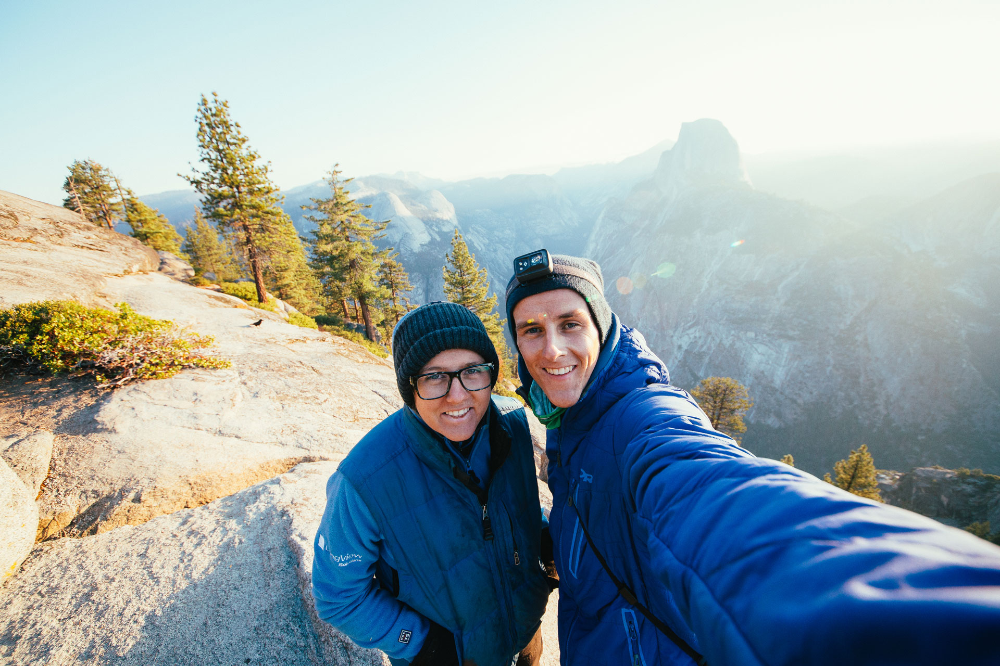

I’ve been adventuring since I was a kid but only recently have begun considering and working on this aspect of my life professionally. I admire a lot of different professional adventurers and most of them are experienced and skilled photographers like Chris Bukard, Callum Snape, Max Rive, whose work makes me feel more than a little bit intimidated. I hesitate to say it, but the scope of their imagery is perhaps beyond what I envision for myself.
I’m a skilled adventure-based photographer and videographer, an experienced writer and wild-at-heart traveller. That’s easy to say and definitely is a large part of who I will become. But I’m also uniquely skilled at and passionate about challenging traditional masculinity through my work with boys. So over the last few months I’ve been developing a vision that brings those two parts of me together. Here’s what I’ve come up with, partly hoping that the more often I share and talk about this idea, the more clearly defined it will become.
I guide boys and young men through outdoor experiences and feminism-based anti-traditional masculinity. The themes I explore in my photography are ‘humans + wilderness’ (landscape images showing the interaction between people and the natural world) and ‘boys + tenderness’ (candid and raw images showing moments of closeness and support between boys and young men). My goal is create a body of work from these experiences that illustrates connection and interdependence in places we are often told they don’t exist. I believe that in a world in which division and isolation define both our societal relationship to the earth and traditional expectations for boys and men, this work is deeply needed.
I’m an Explorer with The Outbound, a company built to help everyday people discover the best outdoor adventures, ‘a new generation’s go-to resource for getting outside and planning travel.’ Being an Explorer means I’m a local expert and hand-selected elite member of The Outbound community.
I’m a Member of Leave No Trace Canada, an organization dedicated to promoting and inspiring responsible outdoor recreation by building awareness, appreciation and respect for our wildlands. I firmly believe in and follow the practices of LNT camping in order to preserve the integrity of the ecosystems I am privileged to be able to explore.
I have no idea who, if anyone, will look at this page. But just wanted to add in conclusion to get in contact with me if you’d like to travel or work together. I love company and I wish I had more adventure-focused people in my life, plus my bucket list needs help to get done. Links in the footer.
Last updated in December 2016.